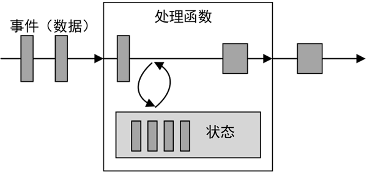
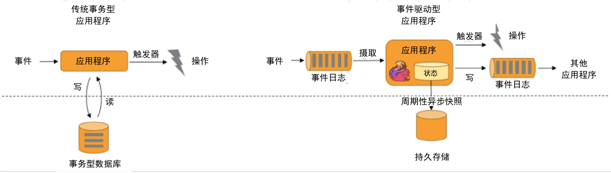
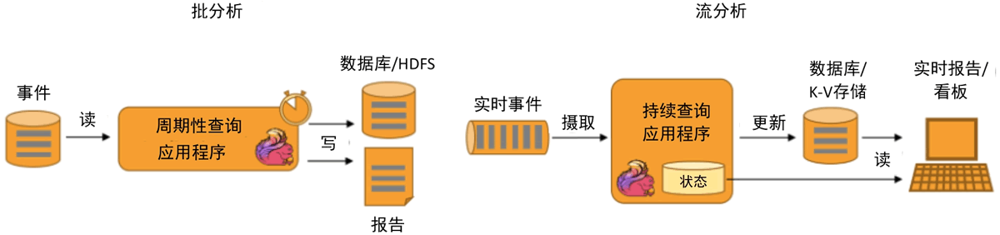
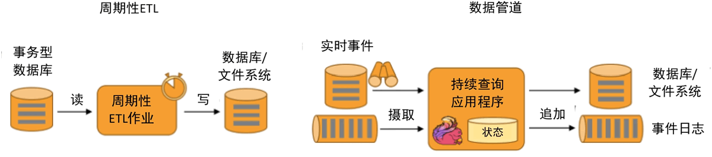
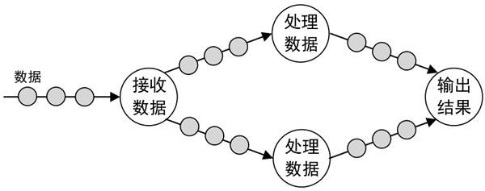
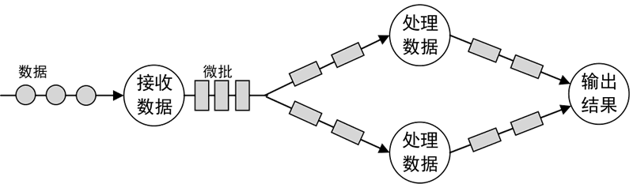
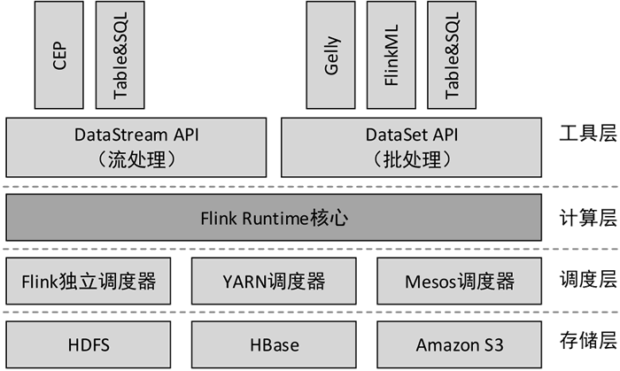

首页 > 编程笔记
Apache Flink是什么（超级详细）
Apache Flink 是一个框架和分布式处理引擎，用于对无边界和有边界的数据流进行有状态的计算。Flink 被设计为可以在所有常见集群环境中运行，并能以内存速度和任意规模执行计算。
目前市场上主流的流式计算框架有Apache Storm、Spark Streaming、Apache Flink等，但能够同时支持低延迟、高吞吐、Exactly-Once（收到的消息仅处理一次）的框架只有Apache Flink。
Flink 是原生的流处理系统，但也提供了批处理 API，拥有基于流式计算引擎处理批量数据的计算能力，真正实现了批流统一。与 Spark 批处理不同的是，Flink 把批处理当作流处理中的一种特殊情况。在 Flink 中，所有的数据都看作流，是一种很好的抽象，因为这更接近于现实世界。
Flink 在 2015 年 9 月发布了第一个稳定版本 0.9，编写本文时已经发布到了 1.13，随着国内社区的不断推动，越来越多的公司开始选择使用 Flink 作为实时数据处理技术。
Apache Storm 可以做到低延迟，但无法满足高吞吐的要求。同时满足高吞吐、低延迟对流式数据处理框架是非常重要的，可以大大提高数据处理的性能。
每一个具有一定复杂度的流处理应用都是有状态的，任何运行基本业务逻辑的流处理应用都需要在一定时间内存储所接收的事件或中间结果，以供后续的某个时间点（例如收到下一个事件或者经过一段特定时间）进行访问并进行后续处理，如下图所示。
Flink 是一个针对数据流进行有状态计算的框架，其提供了许多状态管理相关的特性，为多种不同的数据结构提供了相对应的状态基础类型。
Flink 除了支持处理时间外，还支持事件时间（Event Time），根据事件本身自带的时间戳（事件的产生时间）进行结果的计算，例如窗口聚合、会话计算、模式检测和基于时间的聚合等。这种基于事件驱动的机制使得事件即使乱序到达，Flink 也能够计算出精确的结果，保证了结果的准确性和一致性。
Flink 可以将任务执行的快照保存在存储介质上，当需要停机运维等操作时，下次启动可以直接从事先保存的快照恢复原有的计算状态，使得任务继续按照停机之前的状态运行。
此外，Flink 还支持在不丢失应用状态的前提下更新作业的程序代码，或进行跨集群的作业迁移。
传统应用和事件驱动型应用架构的区别如下图所示。
Flink 同时支持批量及流式分析应用，如下图所示。
与 ETL 不同的是，ETL 作业通常会周期性地触发，将数据从事务型数据库复制到分析型数据库或数据仓库。但数据管道是以持续流模式运行的，而非周期性触发，它支持从一个不断生成数据的源头读取记录，并将它们以低延迟移动到终点。例如，监控文件系统目录中的新文件，并将其数据写入事件日志。
数据管道的主要应用实例有电子商务中的实时查询索引构建、持续 ETL 等。周期性 ETL 作业和持续数据管道的对比如下图所示。
Micro-Batching：微批流处理。把输入的数据按照预先定义的时间间隔（例如1秒钟）分成短小的批量数据，流经流处理系统进行处理，如下图所示。
Storm 和 Flink 使用的是原生流处理，一次处理一条数据，是真正意义的流处理；而 Spark Streaming 实际上是通过批处理的方式模拟流处理，一次处理一批数据（小批量）。
由此可见，衡量一个流处理系统能力的关键是 Exactly-Once。
Storm 实现了 At-Least-Once，可以对数据至少处理一次，但不能保证仅处理一次，这样就会导致数据重复处理的问题，因此针对计数类的需求可能会产生一些误差；Spark Streaming 和 Flink 都实现了 Exactly-Once，可以保证对数据仅处理一次，即每个记录将被精确处理一次，数据不会丢失，并且不会重复处理。
Storm 通过使用 ACK（确认回执，即数据接收方接收到数据后要向发送方发送 Storm 通过使用 ACK（确认回执，即数据接收方接收到数据后要向发送方发送确认回执，以此来保证数据不丢失）机制来确认每一条数据是否被成功处理，当处理失败时，则重新发送数据。这样很容易做到保证所有数据均被处理，没有遗漏，但这种方式不能保证数据仅被处理一次，因此存在同一条数据重复处理的情况。
由于 Spark Streaming 是微批处理，不是真正意义上的流处理，其容错机制的实现相对简单。Spark Streaming 中的每一批数据成为一个 RDD（Resilient Distributed Dataset，分布式数据集）。RDD Checkpoint（检查点）机制相当于对 RDD 数据进行快照，可以将经常使用的RDD快照到指定的文件系统中，例如 HDFS。当机器发生故障导致内存或磁盘中的RDD数据丢失时，可以快速从快照中对指定的 RDD 进行恢复。
Flink 的容错机制是基于分布式快照实现的，通过 CheckPoint 机制保存流处理作业某些时刻的状态，当任务异常结束时，默认从最近一次保存的完整快照处恢复任务。
总的来说，Storm 非常适合任务量小且延迟要求低的应用，但要注意 Storm 的容错恢复和状态管理都会降低整体的性能水平。如果你要使用 Lambda 架构，并且要集成 Spark 的各种库，那么 Spark Streaming 是一个不错的选择，但是要注意微批处理的局限性以及延迟问题。Flink 可以满足绝大多数流处理场景，提供了丰富的高阶函数，并且也针对批处理场景提供了相应的API，是非常有前景的一个项目。
目前市场上主流的流式计算框架有Apache Storm、Spark Streaming、Apache Flink等，但能够同时支持低延迟、高吞吐、Exactly-Once（收到的消息仅处理一次）的框架只有Apache Flink。
Flink 是原生的流处理系统，但也提供了批处理 API，拥有基于流式计算引擎处理批量数据的计算能力，真正实现了批流统一。与 Spark 批处理不同的是，Flink 把批处理当作流处理中的一种特殊情况。在 Flink 中，所有的数据都看作流，是一种很好的抽象，因为这更接近于现实世界。
Flink 在 2015 年 9 月发布了第一个稳定版本 0.9，编写本文时已经发布到了 1.13，随着国内社区的不断推动，越来越多的公司开始选择使用 Flink 作为实时数据处理技术。
Apache Flink的优势
1) 同时支持高吞吐、低延迟
Flink 是目前开源社区中唯一同时支持高吞吐、低延迟的分布式流式数据处理框架，在每秒处理数百万条事件的同时能够保持毫秒级延迟。而同类框架 Spark Streaming 在流式计算中无法做到低延迟保障。Apache Storm 可以做到低延迟，但无法满足高吞吐的要求。同时满足高吞吐、低延迟对流式数据处理框架是非常重要的，可以大大提高数据处理的性能。
2) 支持有状态计算
所谓状态，就是在流式计算过程中将算子（Flink 提供了丰富的用于数据处理的函数，这些函数称为算子）的中间结果（需要持续聚合计算，依赖后续的数据记录）保存在内存或者文件系统中，等下一个事件进入算子后可以从之前的状态中获取中间结果，以便计算当前的结果（当前结果的计算可能依赖于之前的中间结果），从而无须每次都基于全部的原始数据来统计结果，极大地提升了系统性能。每一个具有一定复杂度的流处理应用都是有状态的，任何运行基本业务逻辑的流处理应用都需要在一定时间内存储所接收的事件或中间结果，以供后续的某个时间点（例如收到下一个事件或者经过一段特定时间）进行访问并进行后续处理，如下图所示。

图 1 状态计算过程
图 1 状态计算过程
Flink 是一个针对数据流进行有状态计算的框架，其提供了许多状态管理相关的特性，为多种不同的数据结构提供了相对应的状态基础类型。
3) 支持事件时间
时间是流处理框架的一个重要组成部分。目前大多数框架计算采用的都是系统处理时间（Process Time），也就是事件传输到计算框架处理时，系统主机的当前时间。Flink 除了支持处理时间外，还支持事件时间（Event Time），根据事件本身自带的时间戳（事件的产生时间）进行结果的计算，例如窗口聚合、会话计算、模式检测和基于时间的聚合等。这种基于事件驱动的机制使得事件即使乱序到达，Flink 也能够计算出精确的结果，保证了结果的准确性和一致性。
4) 支持高可用性配置
Flink 可以与 YARN、HDFS、ZooKeeper 等紧密集成，配置高可用，从而可以实现快速故障恢复、动态扩容、7×24 小时运行流式应用等作业。Flink 可以将任务执行的快照保存在存储介质上，当需要停机运维等操作时，下次启动可以直接从事先保存的快照恢复原有的计算状态，使得任务继续按照停机之前的状态运行。
此外，Flink 还支持在不丢失应用状态的前提下更新作业的程序代码，或进行跨集群的作业迁移。
5) 提供了不同层级的API
Flink 为流处理和批处理提供了不同层级的 API，每一种 API 在简洁性和表达力上有着不同的侧重，并且针对不同的应用场景，不同层级的API降低了系统耦合度，也为用户构建 Flink 应用程序提供了丰富且友好的接口。Flink的应用场景
Flink 的应用场景主要有以下几种类型。1) 事件驱动
根据到来的事件流触发计算、状态更新或其他外部动作，主要应用实例有反欺诈、异常检测、基于规则的报警、业务流程监控、（社交网络）Web应用等。传统应用和事件驱动型应用架构的区别如下图所示。

图 2 传统应用和事件驱动型应用架构的区别
图 2 传统应用和事件驱动型应用架构的区别
2) 数据分析
从原始数据中提取有价值的信息和指标，这些信息和指标数据可以写入外部数据库系统或以内部状态的形式维护，主要应用实例有电信网络质量监控、移动应用中的产品更新及实验评估分析、实时数据分析、大规模图分析等。Flink 同时支持批量及流式分析应用，如下图所示。

图 3 Flink批量及流式分析应用
图 3 Flink批量及流式分析应用
3) 数据管道
数据管道和 ETL（Extract-Transform-Load，提取-转换-加载）作业的用途相似，都可以转换、丰富数据，并将其从某个存储系统移动到另一个。与 ETL 不同的是，ETL 作业通常会周期性地触发，将数据从事务型数据库复制到分析型数据库或数据仓库。但数据管道是以持续流模式运行的，而非周期性触发，它支持从一个不断生成数据的源头读取记录，并将它们以低延迟移动到终点。例如，监控文件系统目录中的新文件，并将其数据写入事件日志。
数据管道的主要应用实例有电子商务中的实时查询索引构建、持续 ETL 等。周期性 ETL 作业和持续数据管道的对比如下图所示。

图 4 周期性ETL作业和持续数据管道的对比
图 4 周期性ETL作业和持续数据管道的对比
流计算框架对比
当前大数据领域主流的流式计算框架有 Apache Storm、Spark Streaming、Apache Flink 三种。通常将 Apache Storm 称为第一代流式计算框架，Spark Streaming 称为第二代流式计算框架，现在又出现了一种优秀的第三代实时计算框架 Apache Flink，这三种计算框架的区别如下表所示。| 产 品 | 模 型 | API | 处理次数 | 容 错 | 状态 | 延迟 | 吞吐量 |
|---|---|---|---|---|---|---|---|
| Apache Storm | Native （数据进入立即处理） | 组合式（基础 API） |
At-Least-Once （至少一次） |
ACK 机制 | 无 | 低 | 低 |
| Spark Streaming | Micro-Batching（微批处理） | 声明式（提供高阶函数） |
Exactly-Once （仅一次） |
RDD Checkpoint | 有 | 中 | 高 |
| Apache Flink | Native | 声明式 | Exactly-Once | Checkpoint | 有 | 低 | 高 |
1) 模型
Native：原生流处理。指输入的数据一旦到达，就立即进行处理，一次处理一条数据，如下图所示。

图 5 原生流处理
图 5 原生流处理
Micro-Batching：微批流处理。把输入的数据按照预先定义的时间间隔（例如1秒钟）分成短小的批量数据，流经流处理系统进行处理，如下图所示。

图 6 微批流处理
图 6 微批流处理
Storm 和 Flink 使用的是原生流处理，一次处理一条数据，是真正意义的流处理；而 Spark Streaming 实际上是通过批处理的方式模拟流处理，一次处理一批数据（小批量）。
2) API
Storm 只提供了组合式的基础 API，而 Spark Streaming 和 Flink 都提供了封装后的高阶函数，例如 map()、filter()，以及一些窗口函数、聚合函数等，使用这些函数可以轻松处理复杂的数据，构建并行应用程序。3) 处理次数
在流处理系统中，对数据的处理有 3 种级别的语义：At-Most-Once（最多一次）、At-Least-Once（至少一次）、Exactly-Once（仅一次）：- At-Most-Once：每条数据最多被处理一次，会有丢失数据的可能。
- At-Least-Once：每条数据至少被处理一次，保证数据不会丢失，但数据可能会被重复处理。
- Exactly-Once：每条数据仅被处理一次，不会丢失数据，也不会重复处理。
由此可见，衡量一个流处理系统能力的关键是 Exactly-Once。
Storm 实现了 At-Least-Once，可以对数据至少处理一次，但不能保证仅处理一次，这样就会导致数据重复处理的问题，因此针对计数类的需求可能会产生一些误差；Spark Streaming 和 Flink 都实现了 Exactly-Once，可以保证对数据仅处理一次，即每个记录将被精确处理一次，数据不会丢失，并且不会重复处理。
4) 容错
由于流处理系统的许多作业都是 7×24 小时运行的，不断有输入的数据，因此容错性比批处理系统更难实现。一旦因为网络等原因导致节点宕机，流处理系统应该具备从这种失败中快速恢复的能力，并从上一个成功的状态重新处理。Storm 通过使用 ACK（确认回执，即数据接收方接收到数据后要向发送方发送 Storm 通过使用 ACK（确认回执，即数据接收方接收到数据后要向发送方发送确认回执，以此来保证数据不丢失）机制来确认每一条数据是否被成功处理，当处理失败时，则重新发送数据。这样很容易做到保证所有数据均被处理，没有遗漏，但这种方式不能保证数据仅被处理一次，因此存在同一条数据重复处理的情况。
由于 Spark Streaming 是微批处理，不是真正意义上的流处理，其容错机制的实现相对简单。Spark Streaming 中的每一批数据成为一个 RDD（Resilient Distributed Dataset，分布式数据集）。RDD Checkpoint（检查点）机制相当于对 RDD 数据进行快照，可以将经常使用的RDD快照到指定的文件系统中，例如 HDFS。当机器发生故障导致内存或磁盘中的RDD数据丢失时，可以快速从快照中对指定的 RDD 进行恢复。
Flink 的容错机制是基于分布式快照实现的，通过 CheckPoint 机制保存流处理作业某些时刻的状态，当任务异常结束时，默认从最近一次保存的完整快照处恢复任务。
5) 状态
流处理系统的状态管理是非常重要的，Storm没有实现状态管理，Spark Streaming和Flink都实现了状态管理。通过状态管理可以把程序运行中某一时刻的数据结果保存起来，以便于后续的计算和故障的恢复。6) 延迟
由于Storm和Flink是接收到一条数据就立即处理，因此数据处理的延迟很低；而Spark Streaming是微批处理，需要形成一小批数据才会处理，数据处理的延迟相对偏高。7) 吞吐量
Storm 的吞吐量相对来说较低，Spark Streaming 和 Flink 的吞吐量则比较高。较高的吞吐量可以提高资源利用率，减小系统开销。总的来说，Storm 非常适合任务量小且延迟要求低的应用，但要注意 Storm 的容错恢复和状态管理都会降低整体的性能水平。如果你要使用 Lambda 架构，并且要集成 Spark 的各种库，那么 Spark Streaming 是一个不错的选择，但是要注意微批处理的局限性以及延迟问题。Flink 可以满足绝大多数流处理场景，提供了丰富的高阶函数，并且也针对批处理场景提供了相应的API，是非常有前景的一个项目。
Flink的主要组件
Flink 是由多个组件构成的软件栈，整个软件栈可分为 4 层，如下图所示。

图 7 Flink的主要组件
图 7 Flink的主要组件
1) 存储层
Flink 本身并没有提供分布式文件系统，因此 Flink 的分析大多依赖于 HDFS，也可以从 HBase 和 Amazon S3（亚马逊云存储服务）等持久层读取数据。2) 调度层
Flink 自带一个简易的资源调度器，称为独立调度器（Standalone）。若集群中没有任何资源管理器，则可以使用自带的独立调度器。当然，Flink也支持在其他的集群管理器上运行，包括 Hadoop YARN、Apache Mesos等。3) 计算层
Flink 的核心是一个对由很多计算任务组成的、运行在多个工作机器或者一个计算集群上的应用进行调度、分发以及监控的计算引擎，为 API 工具层提供基础服务。4) 工具层
在 Flink Runtime 的基础上，Flink 提供了面向流处理（DataStream API）和批处理（DataSet API）的不同计算接口，并在此接口上抽象出了不同的应用类型组件库，例如基于流处理的 CEP（复杂事件处理库）、Table&SQL（结构化表处理库）和基于批处理的 Gelly（图计算库）、FlinkML（机器学习库）、Table&SQL（结构化表处理库）。关注公众号「站长严长生」，在手机上阅读所有教程，随时随地都能学习。内含一款搜索神器，免费下载全网书籍和视频。

微信扫码关注公众号